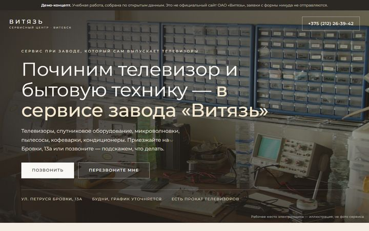

Сервисный центр · ремонт ТВ и бытовой техники
Страница сервиса при заводе «Витязь»
У завода есть ремонт для населения, но в интернете его почти не видно: на сайте завода это одна строчка в «прочих услугах», в справочниках разные телефоны. Человек идёт к частнику, не зная, что рядом сервис самого производителя.
- Первый экран — «сервис при заводе», а не «качественный ремонт»: это единственное, чем он отличается от сотни частников.
- Крупный шрифт и кнопка «Позвонить» под пальцем — аудитория старше среднего и чаще звонит, чем заполняет формы.
- Прокат телевизора на время ремонта — отдельным блоком: такого у частников нет.
- Подсказка «как описать поломку по телефону» — мастеру проще назвать срок, клиенту не неловко.
Открыть страницу
Учебная работа по открытым данным. Не официальный сайт завода, заявки с формы никуда не уходят. Где данные расходятся — «уточняется».